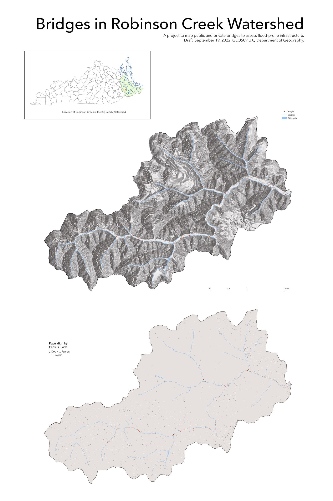

Jump to:
Final Report
Community
Infrastructure
Inundation
Terrain
Credits
Robinson Creek
An analysis of flood-prone infrastructure and conditions in the Eastern Kentucky watershed of Robinson Creek.
For a summary of goals, methodology, and results, take a look at the
Final Report
.
01: Community

High resolution version
02: Infrastructure
High resolution version
03: Inundation
04: Terrain
High resolution version